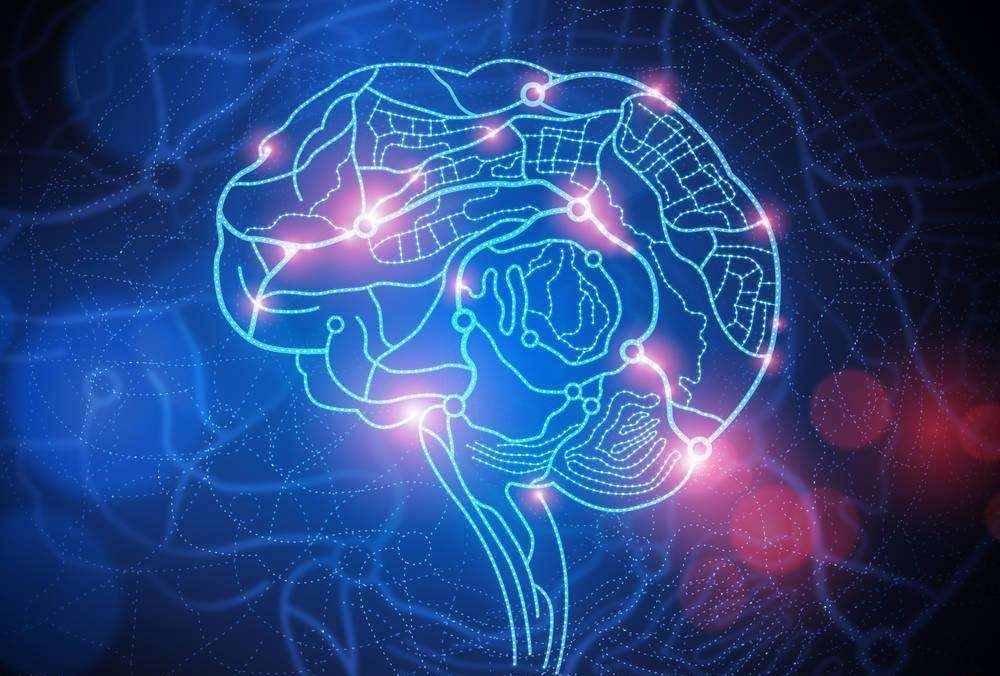
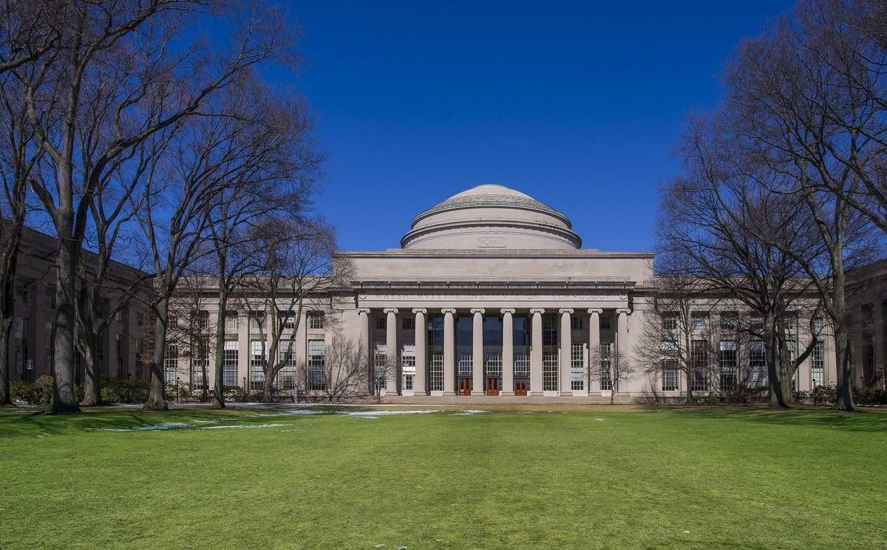
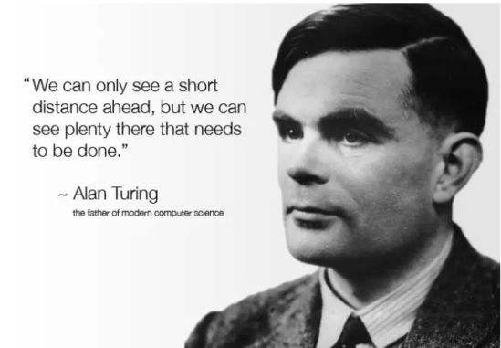
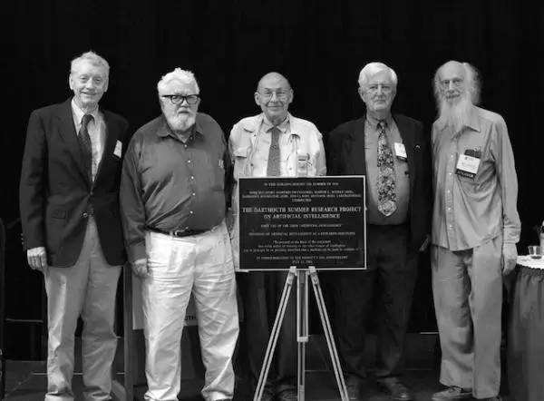
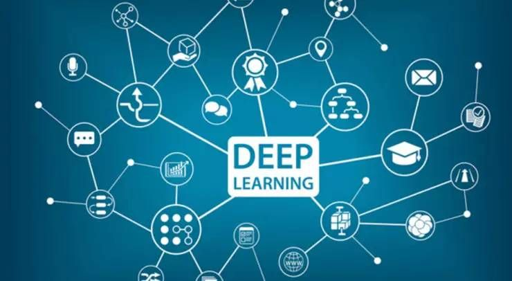
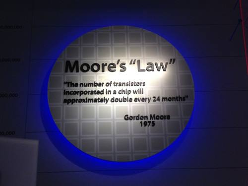
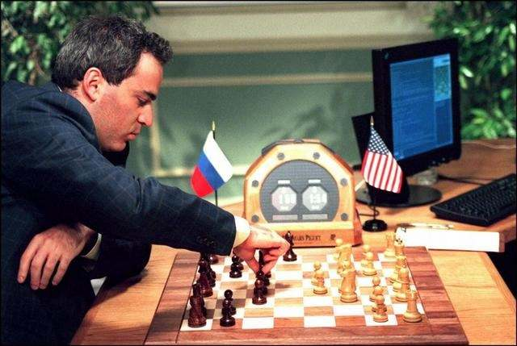
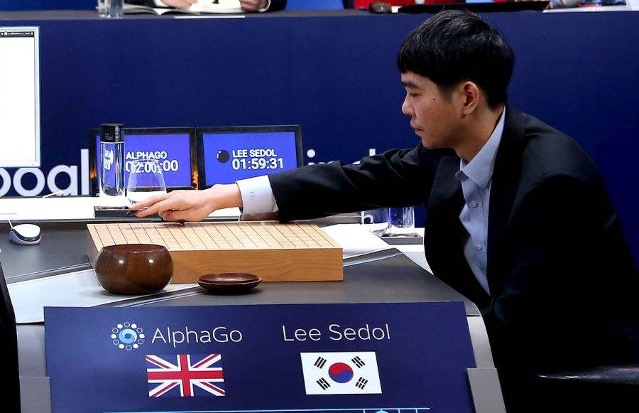

虽然在当时仅是一个数学理论，但是这个理论让人们了解到计算机可以如人类大脑一样进行“深度学习”，描述了如何让人造神经元网络实现逻辑功能。
1955年8月31日，JohnMcCarthy、Marvin Minsky、Nathaniel Rochester和Claude Shannon四位科学家联名提交了一份《人工智能研究》的提案，首次提出了人工智能的概念，其中的JohnMcCarthy被后人尊称为“人工智能之父”。
1969人类首次提出了反向传播算法，这是80年代的主流算法，同时也是机器学习历史上最重要的算法之一，奠定了人工智能的基础。
这种算法的独特之处在于映射、非线性化，具有很强的函数复现能力，可以更好地训练人工智能的学习能力。
人们对于智能机器的想像永无止境
亚里士多德曾说过，如果机器能干很多活，岂不能让人类解放出来。《星球大战》《黑客帝国》等科幻电影，激发了一代又一代学者和实业家，前伏后继地投入到人工智能的研究中。AlphaGo算法的主要发明人，就是受了“深蓝”的影响而加入AI的行列。
在前60年的发展中，人工智能研究也取得了阶段性成果，特别是有监督深度学习在自然语言理解、语音识别、图像识别等人工智能基础领域，都已经发展到了成熟阶段。接下来，就是AlphaGo开创的无监督深度学习的未来——摆脱人类“监督”的增强学习。
实际上，随着计算机的发明，人们一直在探讨，这到底会导致什么样的人工智能？一种预见是可以产生功能性的人工智能，这就是今天有监督深度学习所广泛取得的成果。还有一种观点是人工智能可以模仿人的思维和感情活动，这就是无监督深度学习将要开创的未来。
当智能机器可以自己张开眼睛看世界，通过自主探索世界来获得智能的话，未来可能出现的变化就是“无穷大”了。

语音助手可以识别用户的语言，并进行简单的系统操作，比如苹果的Siri，某种程度上来说，语音助手赋予了人工智能“说话”和“交流”的能力。
1993年作家兼计算机科学家Vernor Vinge发表了一篇文章，在这篇文章中首次提到了人工智能的“奇点理论”。他认为未来某一天人工智能会超越人类，并且终结人类社会，主宰人类世界，被其称为“即将到来的技术奇点”。
Vernor Vinge是最早的人工智能威胁论提出者，后来者还有霍金和特斯拉CEO马斯克。

谈到人工智能，就不能不提到鼻祖式人物：图灵。1936年，英国数学家、逻辑学家阿兰·麦席森·图灵(1912~1954)提出了一种抽象的计算模型——图灵机(TuringMachine），用纸带式机器来模拟人们进行数学运算的过程，图灵本人被视为计算机科学之父。
1959年，图灵发表了一篇划时代的论文《计算机器与智能》，文中提出了人工智能领域著名的图灵测试——如果电脑能在5分钟内回答由人类测试者提出的一系列问题，且其超过30%的回答让测试者误认为是人类所答，则电脑就通过测试并可下结论为机器具有智能。
图灵测试的概念极大影响人工智能对于功能的定义，在这个途径上，卡耐基·梅隆两位科学家A.Newell和H.Simon的“逻辑理论家”程序非常精妙地证明了罗素《数学原理》52道中的38道。Simon宣称在10年之内，机器就可以达到和人类智能一样的高度。

第一批人工智能探索者找到共同的语言后，于整整60年前的1956年，在美国达特茅斯大学开了一次会，希望确立人工智能作为一门科学的任务和完整路径。与会者们也宣称，人工智能的特征都可以被精准描述，精准描述后就可以用机器来模拟和实现。后来普遍认为，达特茅斯会议标志着人工智能的正式诞生。
达特茅斯会议推动了全球第一次人工智能浪潮的出现，即为1956年到1974年。当时乐观的气氛弥漫着整个学界，在算法方面出现了很多世界级的发明，其中包括一种叫做增强学习的雏形（即贝尔曼公式），增强学习就是谷歌AlphaGo算法核心思想内容。现在常听到的深度学习模型，其雏形叫做感知器，也是在那几年间发明的。
先天缺陷导致人工智能在早期发展过程中遇到瓶颈，所以第一次冬天很快到来，对人工智能的资助相应也就被缩减或取消了。

进入20世纪80年代，卡耐基·梅隆大学为DEC公司制造出了专家系统，这个专家系统可帮助DEC公司每年节约4000万美元左右的费用，特别是在决策方面能提供有价值的内容。受此鼓励，很多国家包括日本、美国都再次投入巨资开发所谓第5代计算机，当时叫做人工智能计算机。
在80年代出现了人工智能数学模型方面的重大发明，其中包括著名的多层神经网络和BP反向传播算法等，也出现了能与人类下象棋的高度智能机器。此外，其它成果包括能自动识别信封上邮政编码的机器，就是通过人工智能网络来实现的，精度可达99%以上，已经超过普通人的水平。于是，大家又开始觉得人工智能还是有戏。
然而，1987年到1993年现代PC的出现，让人工智能的寒冬再次降临。当时苹果、IBM开始推广第一代台式机，计算机开始走入个人家庭，其费用远远低于专家系统所使用的Symbolics和Lisp等机器。相比于现代PC，专家系统被认为古老陈旧而非常难以维护。于是，政府经费开始下降，寒冬又一次来临。
那时，甚至学者们都不太好意思说是从事人工智能研究的。人们开始思考人工智能到底往何处走，到底要实现什么样的人工智能。

如何在有限的资源下做有用的事情，这是人工智能一直以来的挑战。一个现实的途径就是像人类造飞机一样，从生物界获得启发后，以工程化方法对功能进行简化、部署简单的数学模型以及开发强大的飞机引擎。
现代AI的曙光发生在这个阶段，出现了新的数学工具、新的理论和摩尔定律。人工智能也在确定自己的方向，其中一个选择就是要做实用性、功能性的人工智能，这导致了一个新的人工智能路径。由于对于人工智能任务的明确和简化，带来了新的繁荣。
在新的数学工具方面，原来已经存在于数学或者其他学科的文献中的数学模型，被重新发掘或者发明出来。当时比较显著几个成果包括最近获得图灵奖的图模型以及图优化、深度学习网络等，都是大约在15年前重新被提出来，重新开始研究。
在新的理论方面，由于数学模型对自然世界的简化，有着非常明确的数理逻辑，使得理论分析和证明成为可能，可以分析出到底需要多少数据量和计算量来以得期望的结果，这对开发相应的计算系统非常有帮助。

在更重要的一方面，摩尔定律让计算越来越强大，而强大计算机很少被用在人工智能早期研究中，因为早期的人工智能研究更多被定义为数学和算法研究。当更强大的计算能力被转移到人工智能研究后，显著提高了人工智能的研究效果。
由于这一系列的突破，人工智能又产生了一个新的繁荣期。

2012年6月，谷歌研究人员Jeff Dean和吴恩达从YouTube视频中提取了1000万个未标记的图像，训练一个由16，000个电脑处理器组成的庞大神经网络。在没有给出任何识别信息的情况下，人工智能通过深度学习算法准确的从中识别出了猫科动物的照片。
这是人工智能深度学习的首次案例，它意味着人工智能开始有了一定程度的“思考”能力。

2016年3月，谷歌AlphaGo 4：1 战胜围棋世界冠军李世石，开启了人工智能的新纪元。
换句话说，AlphaGo对增强学习算法的探索，打开了科技时代“无穷大”的大门。